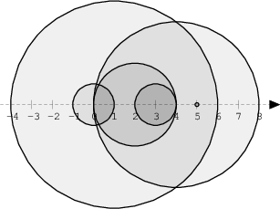

6d-NumberOfDiscIntersections¶
Notes¶
[!warning] Not Everything in Python copies by Value!
ls = [set()] * Nis useless - It copies a single reference to 1 setNtimes across the whole list - To fix this, instead use:ls = [set() for _ in range(N)]
- In Python,
10_000_000 = 10000000 = int(1e7) - Python
enumerateaccepts a start value, which is simply the value at which the returnedi/index/counter starts at. It does not affect where the iterator starts.enumerate(itertools.islice(A, x1+1, None), x1+1)- Start iteration and counter from
x1+1.
- Obtaining a complete list of pairs will always be an \(O(n^2)\) task. So you can quite safely assume that finding all pairs is unlikely to ever be the solution.
sum(range(1, N))is \(O(n)\), and inefficient when we have an \(O(1)\) formula: $\(\frac{n}{2}(n+1)\)$- Or
N * (N - 1) // 2in Python(N - 1)NOT(N + 1)because remembersum(range(1, N))upper bound is exclusive:- \(= 1 + 2 + ... + (N - 1)\)
- \(= \frac{(n-1)}{2}((n-1)+1)\)
- \(= \frac{(n-1)}{2}(n)\)
- \(= \frac{n}{2}(n-1)\)
// 2because the result is always an integer, but/ 2(unnecessarily in this case) turns the returned type to float
- Or
[!danger] Don't Optimise Out Exit Condition Branching from Loops Adding an
ifcondition inside a loop does add a small, usually extremely cheap overhead every loop - assuming the condition is a simple comparison.You could try determine the minimum number of iterations that need to pass before the exit condition can be reached, then conditionally run 2 loops if \(n\) is large enough, where only the 2nd loop contains the exit branch.
But don't do this: 1. A simple
ifcondition is extremely cheap, and unlikely to ever form a major time penalty in a loop 2. Adding a conditional 2 loops where the 2nd loop is identical apart from the condition, is code duplication and prone to errors - especially in timed conditions 3. It's VERY easy to miscalculate the min \(n\) at which the exit condition can be reached. Meaning you can unnecessarily introduce correctness bugs into the code on top of the complicated double loop, where the 2nd one may not even run if \(n\) is too small. 4. In a Codility Assessment, the assessors will likely not care about this kind of optimization. They want to see you reach the optimal algorithm, not try to make the same algorithm barely run any quicker while being far less readable and more error prone.
Problem¶
We draw N discs on a plane. The discs are numbered from 0 to N − 1. An array A of N non-negative integers, specifying the radiuses of the discs, is given. The J-th disc is drawn with its center at (J, 0) and radius A[J].
We say that the J-th disc and K-th disc intersect if J ≠ K and the J-th and K-th discs have at least one common point (assuming that the discs contain their borders).
The figure below shows discs drawn for N = 6 and A as follows:
A[0] = 1 A[1] = 5 A[2] = 2 A[3] = 1 A[4] = 4 A[5] = 0

There are eleven (unordered) pairs of discs that intersect, namely:
discs 1 and 4 intersect, and both intersect with all the other discs;
disc 2 also intersects with discs 0 and 3.
Write a function:
def solution(A)
content_copy
that, given an array A describing N discs as explained above, returns the number of (unordered) pairs of intersecting discs. The function should return −1 if the number of intersecting pairs exceeds 10,000,000.
Given array A shown above, the function should return 11, as explained above.
Write an efficient algorithm for the following assumptions:
N is an integer within the range [0..100,000];
each element of array A is an integer within the range [0..2,147,483,647].
Code¶
Attempt 3¶
- This time I remember the exit condition and formula ```python
A = [ 1 5 2 1 4 0]¶
Circles Intersect when the distance between their centres is <= sum of their radii¶
x2 - x1 <= r1 + r2¶
<= means we have a metric to sort by¶
But this approach will require us to find all combo pairs - pairs is always O(n^2)¶
O(n^2) is almost never the answer¶
¶
Another approach is determine when circles begin and end overlapping¶
And then count intersects on the 2nd pass. This is O(n)¶
Each Circle id is its index in A¶
Borders = [+0 -0 ]¶
= [+1 -1]¶
= [+2 -2 ]¶
= [ +3 -3 ]¶
= [+4 -4]¶
= [ #5]¶
¶
Intersects = [6 3 2] = 11¶
New_Borders = [+4 +1 +1] = +len(A)¶
Dead_Borders = [ -1 -2 -3] = -len(A)¶
Active = [4 3 4 2 0]¶
Intersects_n0 = sum(range(1, New_Borders[0]))¶
Intersects_n2 += New_Borders[n] * Active[n-1] ? Why is it different?¶
Intersects_n5 += New_Borders[n] * Active[n-1] ? Is this an edgecase with +1 New_Border?¶
¶
A2 = [ 0 2 2 0 1 2]¶
Borders = [#0 ]¶
[+1 -1 ]¶
[+2 -2 ]¶
[ #3 ]¶
[ +4 -4]¶
[ +5 -5]¶
¶
New_Borders = [+3 +3 ]¶
Dead_Borders = [-1 -2 -1 -2]¶
Active = [ 2 1 2 0]¶
Intersects = [+3 +9 ] = 12¶
Interescts_n0 = sum(range(1, New_Borders[0]))¶
Interescts_n3 = sum(range(1, New_Borders[n])) + New_Borders[n] * Active[n-1]¶
Each new circle overlaps with all previous active circles:¶
New_Borders[n] * Active[n-1]¶
And each circle starting on a point overlaps with all other circles also starting on that point:¶
sum(range(1, New_Borders[n]))¶
¶
sum(range(1, new)) = new(new-1) / 2¶
def solution(A): if len(A) < 2: return 0 new_borders = [0] * len(A) old_borders = [0] * len(A) for x, r in enumerate(A): new = max(x-r, 0) # Clamped within A new_borders[new] += 1 old = min(x+r, len(A)-1) # Clamped within A old_borders[old] += 1 its = 0 # InTerSects active = 0 for new, old in zip(new_borders, old_borders): its += active * new + new * (new-1) // 2 active += new - old if its > 10_000_000: return -1 return its ```
Attempt 2¶
- So making pairs is definitely not the solution
- We instead make like a list of sets where each set contains whether a circle is within the region
sum(range(1, new))is at worst \(O(n)\), so definitely replace with its corresponding formula:- The logic is for a sequence: $\(\sum^n_{i=1}i = 1+2+\dots+n-1+n\)$
- Can actually be turned into a sequence of \(n+1\): $\(\begin{align} n_{1}+n_{n} = 1+n &= n+1 \\ n_{2}+n_{n-1} = 2+n-1 &= n+1 \\ n_{3}+n_{n-2} = 3+n-2 &= n+1 \\ \dots \end{align}\)$
-
\[\sum^n_{i=1}i = \frac{n}{2}(n+1)\]
- If \(n\) is even, then we have \(\frac{n}{2}\) lots of \(n+1\).
- If \(n\) is odd, then the middle number will not paired up. But the formula still works:
- $\(\begin{align} 1+2+3+4+5 = \\ (1+5)+(2+4)+3 = \\ 6 + 6 + 3 = \\ 2(n+1) + \frac{n+1}{2} = \\ \frac{4(n+1)}{2}+\frac{n+1}{2} = \\ \frac{5}{2}(n+1) = \\ \frac{n}{2}(n+1) \end{align}\)$ ```python
A = [ 1 5 2 1 4 0]¶
Circles Intersect when the distance between their centres is <= sum of their radii¶
x2 - x1 <= r1 + r2¶
<= means we have a metric to sort by¶
But this approach will require us to find all combo pairs - pairs is always O(n^2)¶
O(n^2) is almost never the answer¶
¶
Another approach is determine when circles begin and end overlapping¶
And then count intersects on the 2nd pass. This is O(n)¶
Each Circle id is its index in A¶
Borders = [+0 -0 ]¶
= [+1 -1]¶
= [+2 -2 ]¶
= [ +3 -3 ]¶
= [+4 -4]¶
= [ #5]¶
¶
Intersects = [6 3 2] = 11¶
New_Borders = [+4 +1 +1] = +len(A)¶
Dead_Borders = [ -1 -2 -3] = -len(A)¶
Active = [4 3 4 2 0]¶
Intersects_n0 = sum(range(1, New_Borders[0]))¶
Intersects_n2 += New_Borders[n] * Active[n-1] ? Why is it different?¶
Intersects_n5 += New_Borders[n] * Active[n-1] ? Is this an edgecase with +1 New_Border?¶
¶
A2 = [ 0 2 2 0 1 2]¶
Borders = [#0 ]¶
[+1 -1 ]¶
[+2 -2 ]¶
[ #3 ]¶
[ +4 -4]¶
[ +5 -5]¶
¶
New_Borders = [+3 +3 ]¶
Dead_Borders = [-1 -2 -1 -2]¶
Active = [ 2 1 2 0]¶
Intersects = [+3 +9 ] = 12¶
Interescts_n0 = sum(range(1, New_Borders[0]))¶
Interescts_n3 = sum(range(1, New_Borders[n])) + New_Borders[n] * Active[n-1]¶
Each new circle overlaps with all previous active circles:¶
New_Borders[n] * Active[n-1]¶
And each circle starting on a point overlaps with all other circles also starting on that point:¶
sum(range(1, New_Borders[n]))¶
¶
Implement return -1 when its >= 1e7¶
All Circles overlap with each other will get us to 1e7 quickest¶
sum(range(1, x)) >= 1e7¶
sum(range(1, x))/x = (1+x)/(x)¶
1e7x = x^2 + x¶
0 = x^2 - 1e7x¶
x ~= 3162 min circles¶
def solution(A): if len(A) < 2: return 0 new_borders = [0] * len(A) old_borders = [0] * len(A) for x, r in enumerate(A): new = max(x-r, 0) # Clamped within A new_borders[new] += 1 old = min(x+r, len(A)-1) # Clamped within A old_borders[old] += 1 # InTerSects its = 0 active = 0 for new, old in zip(new_borders, old_borders): its += active * new + sum(range(1, new)) active += new - old return its ```
Attempt 1¶
- We've figured out that to determine an intersect between 2 circles, the sum of their radii must be equal to or larger than the distance between their centres.
- Maybe we aren't sorting the radii directly - but rather the sum of each radii
- We will need the sum of each radii
- Any sum of radii larger than
Nis an intersect with all circles
- Any sum of radii larger than
- We also need the difference between each centre - or rather the distance between each circle
- We could optimize out
x2 - x1, by just using a single enumerate on the second loop, starting at value1, since we already know the initial distanced=1, anddincreases by 1 as we move along.- But this is a minuscule improvement, and not the kind we need. We need to get rid of this double loop.
- We could optimize out
- I know this produces correct answers, but nested loops are a big red flag for not having the correct answer
- And I know from the lesson that sorting will likely be one of the solutions - and maybe an optimal one.
- And notice:
x2 - x1 <= r1 + r2- We have a condition to sort by
- We can pre-generate all possible values of
x2 - x1, since we knowN=len(A) - At that point, for every
x2-x1value, we will need to count the number of sum of radii above this value. - How do we get the sum of all pairs of radii? That's still \(O(n^2)\).
Test Cases¶
txt
[]
[0]
[0, 0]
[1, 0]
[0, 1]
[1, 0, 1]
[1, 0, 1, 0, 1, 0, 1]
Code¶
python
from itertools import islice
def solution(A):
if len(A) <= 1: # Need at least 2 circles for an intersect
return 0
# In-Ter-Sects Count
its = 0
# O(n^2) Nested Loop Solution
for x1, r1 in enumerate(islice(A, len(A)-1)):
for x2, r2 in enumerate(islice(A, x1+1, None), x1+1): # Prevent double counting an intersect
# Diff between centers <= Sum of radii
# print("==========")
# print(f"x1+d=x2 : {x1}+{x2-x1}={x2}")
# print(f"r1+r2 = {r1}+{r2}={r1+r2}")
if x2 - x1 <= r1 + r2: # This is the key
its += 1
# print("its = ", its)
return its